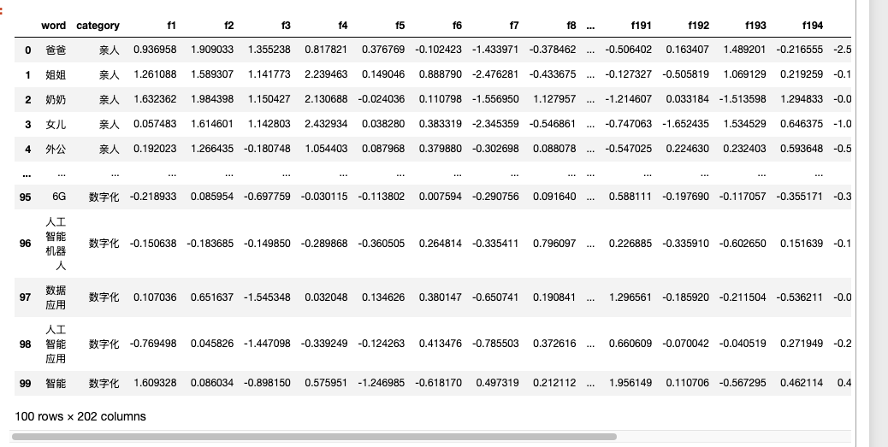

一、介绍
UMAP（Uniform Manifold Approximation and Projection for Dimension Reduction）是一种非线性降维技术，类似于t-SNE、PCA，可用于可视化。在降维应用中， 相比于t-SNE，umap既快又准。
如果对 UMAP算法感兴趣，可以阅读论文
McInnes, L, Healy, J, UMAP: Uniform Manifold Approximation and Projection for Dimension Reduction, ArXiv e-prints 1802.03426, 2018
二、准备数据
2.1 读取数据
我从 人民日报(1946-2023.12.18) 训练的 word2vec模型 中， 选出了100个词的词向量，构建得到了 data.csv.gz
- word: 词语，一共有100个
- category: 词语的类别， 一共五种(亲人、环保、研发、国王、数字化)
- f1,f2,f3,…,f200 词向量的200维（每个词语的词向量是200维的向量）
import pandas as pd
df = pd.read_csv('data.csv.gz', compression='gzip')
df

2.2 查看词语&对应类别
大邓准备了五类词， 每类词20个词， 词语类别按顺序依次是 亲人、环保、研发、国王、数字
df['word'].tolist()
Run
['爸爸', '姐姐', '奶奶', '女儿', '外公', '哥哥', '儿子', '祖母', '父母亲', '外婆', '妹妹', '孙女', '姥爷', '小女儿', '姥姥', '二姐', '姑姑', '弟弟', '弟弟妹妹', '爸爸妈妈', '低碳', '节能', '环境保护', '绿色环保', '节能降耗', '环保节能', '生态环保', '节能环保', '节能低碳', '绿色低碳', '减排', '绿色发展', '保护环境', '清洁生产', '建筑节能', '环境治理', '减碳', '循环经济', '低碳环保', '治理污染', '科研开发', '科技研发', '科研创新', '研发创新', '技术创新', '技术开发', '技术研发', '产品开发', '产品研发', '原始创新', '科技创新', '研究开发', '新药研发', '核心技术研发', '产学研结合', '科技开发', '基础研究', '新产品开发', '研发成果', '科研成果产业化', '二世', '王储', '公主', '女王', '王妃', '陛下', '王宫', '王室', '王室成员', '皇室成员', '登基', '六世', '继承王位', '五世', '摄政王', '七世', '英国女王', '三世', '四世', '继位', '人工智能技术', 'AI', '数字技术', '虚拟现实', '云计算', '万物互联', '信息技术', '语音技术', '物联网', '智能硬件', '5G技术', 'IoT', '智能应用', '软件技术', '融合应用', '6G', '人工智能机器人', '数据应用', '人工智能应用', '智能']
词语对应的类别
print(df['category'].tolist())
Run
['亲人', '亲人', '亲人', '亲人', '亲人', '亲人', '亲人', '亲人', '亲人', '亲人', '亲人', '亲人', '亲人', '亲人', '亲人', '亲人', '亲人', '亲人', '亲人', '亲人', '环保', '环保', '环保', '环保', '环保', '环保', '环保', '环保', '环保', '环保', '环保', '环保', '环保', '环保', '环保', '环保', '环保', '环保', '环保', '环保', '研发', '研发', '研发', '研发', '研发', '研发', '研发', '研发', '研发', '研发', '研发', '研发', '研发', '研发', '研发', '研发', '研发', '研发', '研发', '研发', '国王', '国王', '国王', '国王', '国王', '国王', '国王', '国王', '国王', '国王', '国王', '国王', '国王', '国王', '国王', '国王', '国王', '国王', '国王', '国王', '数字化', '数字化', '数字化', '数字化', '数字化', '数字化', '数字化', '数字化', '数字化', '数字化', '数字化', '数字化', '数字化', '数字化', '数字化', '数字化', '数字化', '数字化', '数字化', '数字化']
三、实验代码
3.1 环境准备
在 cmd(terminal) 安装本文需要的库
pip3 install umap-learn
pip3 install datashader,bokeh,holoviews #可视化可能会用到的库
3.2 降维
将 100 个词的词向量数据从 200 维压缩到 2 维
import umap
word_emb_redution_data = umap.UMAP(
n_neighbors = 15, #默认，不需要理解
min_dist = 0.1, #默认，不需要理解
n_components = 2, #2维
random_state = 666, #默认， 保证任意时空代码运行结果的随机状态是一致的
).fit(df.iloc[:, 2:])
word_emb_redution_data
3.3 静态可视化
绘制静态的图(没有鼠标交互)， 底层应该是调用了 matplotlib 。 因为实验数据是中文词语， 可视化可能绘乱码。为避免问题， 提前运行代码
import matplotlib.pyplot as plt
import matplotlib
import matplotlib_inline
matplotlib_inline.backend_inline.set_matplotlib_formats('png', 'svg')
import scienceplots
import platform
plt.style.use(['science', 'no-latex', 'cjk-sc-font'])
system = platform.system() # 获取操作系统类型
if system == 'Windows':
font = {'family': 'SimHei'}
elif system == 'Darwin':
font = {'family': 'Arial Unicode MS'}
else:
font = {'family': 'sans-serif'}
matplotlib.rc('font', **font) # 设置全局字体
绘制 五类词的词向量投射到2维空间中的可视化 的静态图(没有鼠标交互)
import umap.plot
umap.plot.points(word_emb_redution_data, labels=df.category, width=800, height=500)
plt.title('五类词的词向量投射到2维空间中的可视化')
3.4 动态交互可视化
umap.plot 内置了bokeh的动态交互功能， 需要先构造鼠标交互悬浮的信息
mapper = {'亲人': 1, '环保': 2, '研发':3, '国王':4, '数字化':5 }
hover_data = pd.DataFrame({'index':df.index,
'item': df['category'],
'label': df['category'].map(mapper)})
hover_data
接下来的代码将会生成一个 html 文件， 因为是动态效果，在博客(公众号)都无法完全显示， 大家如果想查看，可以点击链接下载
https://textdata.cn/blog/2024-01-23-umap/umap_interactive.html
p = umap.plot.interactive(clusterable_embedding,
labels=df.category,
hover_data=hover_data,
point_size=5,
width=800,
height=500)
umap.plot.show(p)

四、下载资料
点击下载实验数据 data.csv.gz